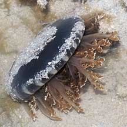
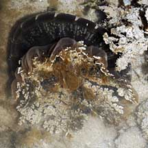
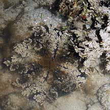
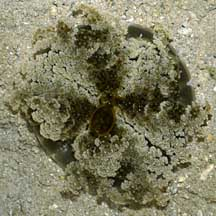
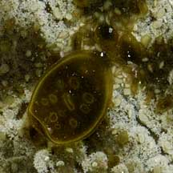
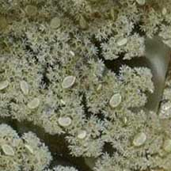
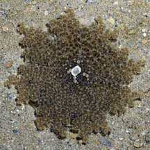
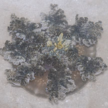

|
|
| jellyfish text index | photo index |
| Phylum Cnidaria > jellyfish > Class Scyphozoa > Order Rhizostomeae |
| Upsidedown
jellyfish Cassiopea sp. Family Cassiopeidae updated Sep 2025 Where seen? This topsy turvy jellyfish can be seasonally common on our Southern shores. Especially onPulau Semaku, found throughout the intertidal from the seagrass meadows to the reef flats. And also in the submerged reefs nearby. It is also seen on some of our other Southern shores. Features: Bell about 4-12cm, with short stout branched oral arms. The oral arm length about half the diameter of the bell. There is usually a pattern of white bars on the upper and underside of the bell. The animal prefers to be 'upside down', with its bell facing the sea floor and oral arms facing upwards toward the light. When one is turned the 'right' way up, it will slowly turn itself upside down again. Sometimes mistaken for a sea anemone, in its preferred position, with only its oral arms visible and bell hidden beneath. |
 Upper side. Pulau Semakau, Mar 08 |
 Turning around. |
 Upside down. |
| Farm in its arms: The jellyfish harbours
microscopic, single-celled algae (called zooxanthellae) inside its
body. The algae undergo photosynthesis to produce food from sunlight.
The food produced is shared with the jellyfish, which in return provides
the algae with shelter and minerals. It is the algae which gives the
jellyfish its colours. Because it relies on photosynthesis,
the jellyfish tends to be found in shallow waters. Status: There is inadequate information as at 2024 to make an informed assesment of its conservation status in Singapore. |
|
 Pulau Semakau, Nov 07 |
 Closer look at the underside. |
 |
| Upsidedown jellyfishes on Singapore shores |
On wildsingapore
flickr
|
| Other sightings on Singapore shores |
 Upside down. Pulau Semakau, Nov 07 |
 Upside down. Terumbu Semakau, Nov 12 |
| Seringat-Kias, Nov 2019 |
| upside-down jellyfish from SgBeachBum on Vimeo. |
| Family Cassiopeidae on Singapore Shores from Checklist of Cnidaria (non-Sclerectinia) Species with their Category of Threat Status for Singapore by Yap Wei Liang Nicholas, Oh Ren Min, Iffah Iesa in G.W.H. Davidson, J.W.M. Gan, D. Huang, W.S. Hwang, S.K.Y. Lum, D.C.J. Yeo, May 2024. The Singapore Red Data Book: Threatened plants and animals of Singapore. 3rd edition. National Parks Board. 663 pp.
|
| Acknowlegement With grateful thanks to Dr Michael N Dawson of the University of California, Merced for identifying this jellyfish. Links
|